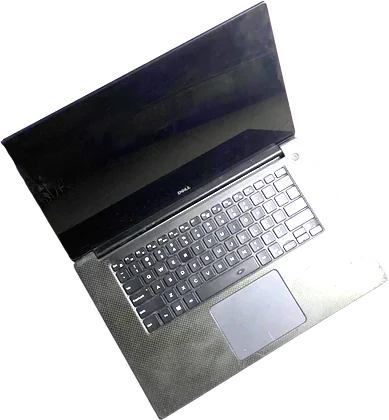
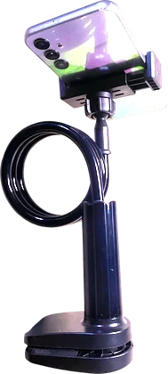
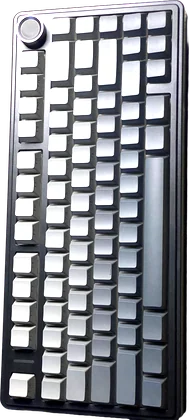

the bench. about 22,000 brush strokes, each one placed by a program in this repo. things in the picture are doors: the planner on the wall opens the log, the notebook the writings, the plant the garden, and the bulb switches the light.
hey! i'm elijah.
a systems engineer who is currently based in lagos. for the next year I'll be building dead-silicon, a from-scratch llm inference engine, all in pure C++, designed for hardware people already own.
will be using no clusters, no frameworks. just my gtx 1050 era laptop, a raspberry pi 5, and a wall meter to quantify exactly what a joule of electricity buys in reasoning.
the build log
the year runs on gates which act as public pass or fail checkpoints where each one is a number i either hit or miss.
for each gate there is one heavy entry, while the daily pulse in the contribution graph lives as hashes in the full log.
every number i ship includes the exact command that made it.
writings
long technical teardowns and short notes (the thinking layer). the log records what happened; this is what i make of it.
all writingsthe bench
the painting at the top was worked up from these three photographs. it is the actual hardware.



the garden
a second brain, kept in public: distilled notes from papers, manuals, and the machine itself, mapped by concept and corrected in place. the log is a record; the garden is a state.
enter the gardensay hi
i read everything. if you tried to reproduce one of my numbers, and especially if you couldn't, i want to hear about it.
olusegunvicky121 [at] gmail [dot] com
lagos, nigeria, utc+1. i also post the timelapses on
x.